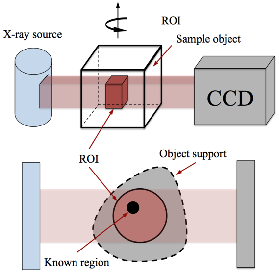

シンクロトロン放射X線を用いたマイクロCT概要
シンクロトロン放射X線を用いたマイクロCTでは、小動物などの小さな撮影対象に対しても、分解能の高い断面画像を作成できます. 製薬や材料科学などの研究分野に大きな影響を与えました. CCDカメラはわずか数ミリというサイズの制限を受けているので, サンプルサイズはカメラの視野(Field Of View(FOV) )よりも小さくなければなりません. サンプルサイズが大きい場合, 再構成画像はローカルトモグラフィー特有のアーティファクト（偽像）による影響を受けてしまいます.
|  |
シンクロトロン放射X線を用いたマイクロCTにおけるローカルトモグラフィー問題です. 撮影対象は一般的にデータ取得に用いられるCCDのFOVの外に延びます. 正確な再構成には, 輪郭線（オブジェクトサポート）の情報に加え，関心領域(ROI)中のある領域の情報の取得が必要となります.

|
|
| fig1 : マイクロCTを用いて撮影されたアルミニウム合金の再構成. オブジェクトのサイズは1mm, FOVの中に完全に収まっている(左). オブジェクトサイズ2mm, 従来手法を用いて再構成されたローカルトモグラフィー(中央). 提案手法(右) | |
Copyright © 2005 Image Science Lab. All rights Reserved.